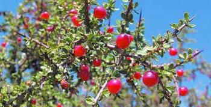
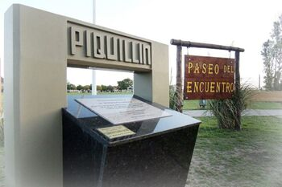
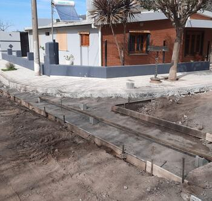
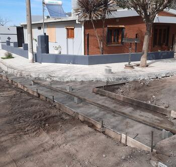

Sobre nuestro pueblo
Piquillín es una localidad situada en el departamento Río Primero, provincia de Córdoba, Argentina. Tiene 2500 habitantes, y se encuentra situada sobre la RN 19, a 40 km de la Ciudad de Córdoba, aproximadamente. La localidad debe su nombre al arbusto forrajero piquillín, que era muy abundante en la zona. La actividad económica predominante es la agricultura y sus derivados, como empresas de transporte de granos, acopios y ventas de maquinaria agrícola. Es un pueblo careciente de industria locales, por lo que sus habitantes deben trasladarse a localidades vecinas para conseguir empleo.


 
